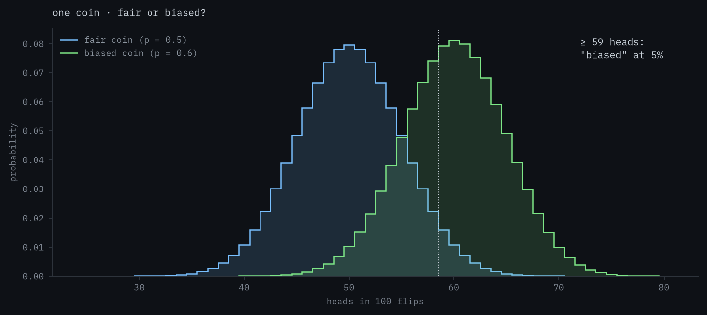
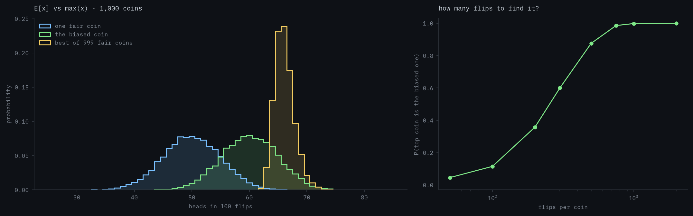
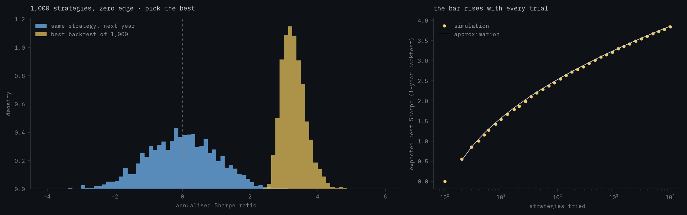

I hand you a coin and tell you it might be biased. You flip it 100 times and get 61 heads. Is it biased?
This is a textbook hypothesis test. If the coin is fair, the number of heads follows a binomial distribution centred on 50. Getting 59 or more heads happens only 4.4% of the time, so with the usual 5% threshold you call any coin with 59+ heads biased. Sixty-one heads: biased.

The test isn't perfect. A fair coin crosses the line 4.4% of the time, and a coin with p = 0.6 only crosses it 62% of the time. But for one coin it works well enough. When the line says "biased", it's usually right.
Now I change the game. I have 1,000 coins. One of them is the p = 0.6 coin and the other 999 are fair. You flip each one 100 times, and you have to tell me which one is biased.
The obvious move is to pick the coin with the most heads. The problem is what that coin is competing against. The biased coin averages 60 heads. But you're not comparing it to a fair coin that averages 50. You're comparing it to the best of 999 fair coins, and that coin averages 66.

That's the whole problem in one picture. A single fair coin is centred on E[x] = 50. When you pick the best of many, you're no longer looking at E[x], you're looking at max(x), and its distribution is a different animal: it's shifted far to the right and much narrower. The biased coin sits between the two. It beats a typical fair coin easily, and it loses to the best fair coin almost every time.
In my simulation the top coin was the biased one only 12% of the time. The other 88% you'd confidently hand me a fair coin. And the 5% test from before is useless here. With 999 fair coins you expect about 44 of them to cross the 59-head line, so you'd get a pile of "biased" coins with the real one somewhere in it, if it made it at all.
You can tighten the threshold. The Bonferroni correction divides the 5% by the number of tests, which here means requiring 70 heads. That kills the false positives, but the biased coin only gets 70 heads 2.5% of the time. You've traded finding the wrong coin for finding no coin.
The only real fix is more data. The right panel shows how the odds change with more flips per coin. At 300 flips you find it 60% of the time, and you need around 750 flips to be close to sure. The bias didn't get bigger; you just needed enough flips for the biased coin to outrun the luckiest fair coin, not the average one.
Replace "coin" with "strategy" and "heads" with "PnL" and you have a normal week of quant research. You have an idea, it has a few parameters, and you run a grid: 10 lookbacks, 10 thresholds, 10 exit rules. That's 1,000 backtests. You sort by Sharpe and look at the top.
To see what the top looks like when there's nothing to find, I generated 1,000 strategies with zero edge: daily returns that are pure noise with mean zero. I backtested each one over a year, picked the one with the best Sharpe ratio, and then ran that same strategy for another year. I repeated the whole thing 2,000 times.

The best backtest has an average Sharpe of 3.3, and in 95% of the runs it was above 2.8. A Sharpe of 3 on a year of daily data looks like a strategy you'd be excited to show people. The next year, the same strategy averages a Sharpe of 0, because that's what it always was. The backtest wasn't measuring the strategy. It was measuring how hard I searched.
The right panel makes this explicit. For strategies with no edge, the expected best Sharpe grows with the number of strategies you try: about 1.6 after 10 tries, 2.5 after 100, 3.3 after 1,000. The white line is the approximation Bailey & López de Prado (2014) use for the expected maximum of N independent normals. It's the bar your best backtest has to clear before it means anything, and it rises with every trial you run.
The coin game gives you most of the answers.
None of this says the best backtest is fake. The biased coin was in there, and sometimes it really was on top. It says the best result of a search is a biased estimate of how good the winner is, and the bias grows with the size of the search. If you only remember the winner and forget the 999 losers, you'll overestimate your edge every time.
The core of the coin experiment is two lines of numpy:
fair_max = rng.binomial(n_flips, 0.5, size=(n_reps, 999)).max(axis=1)
biased = rng.binomial(n_flips, 0.6, size=n_reps)The full simulation, including the strategy sweep and the code for the three figures, is in code.py.